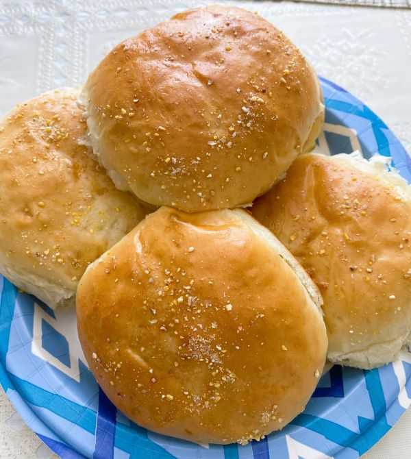
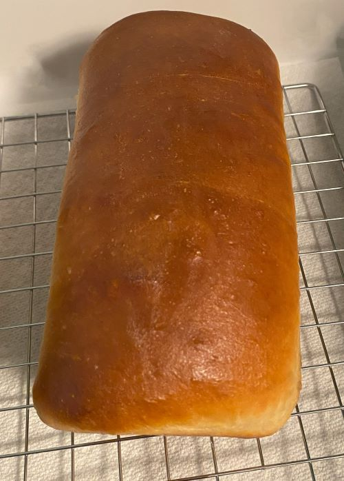

Kaymanda Bread Kitchen
Baked Goods Benefits
Homemade bread is something you think of when you think of your grandma, at least that is what I thought when I was younger. Why is that? I think with the convenience of stores and mass production of baked goods it has become the norm to just go to the store and buy bread and other baked goods. For me I remember every time I went to my grandparents home my grandma always had something homemade to eat and it was always the best thing I have eaten and even taught me how to make yummy baked goods, it is one of my favorite memories. I want to create a space where I can share what I have learned over the years and share as a mom why I switched for a lot of store-bought baked goods to learning and making them from home. I also would love to show you just how versatile bread dough and why more and more people are starting to bake more in their kitchen.
 Bread is made in our home at least once or twice a week.